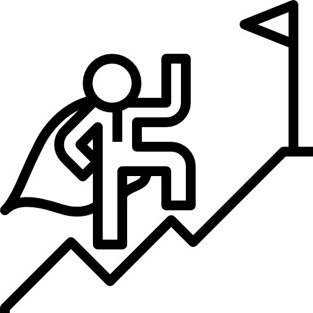

인재육성
인재상

창의적이고 적극적, 화합과 융합, 근면, 성실, 롯데기공이 원하는 인재입니다
인재의 가치를 소중히하는 롯데기공에서 당신의 꿈을 펼치십시오!
롯데기공은 ‘TOP LIVING-SOLUTION PROVIDER’으로 거듭나기 위해 ‘환경을 아름답게 생활을 풍요롭게’라는 사명 아래 전임직원이 공유하고 실천하는 다음과 같은 인재상을 확립하고, 롯데기공과 함께 원대한 꿈을 실현시켜 나갈 젊은이를 찾고 있습니다. 롯데는 현재의 모습이 아닌 미래를 만들어 가는 가능성에 더 높은 가치를 두고 있으며, 자신의 성장과 함께 우리 사회를 보다 성숙시켜 나갈 열정과 책임감을 갖춘 글로벌 인재를 찾습니다. ‘사랑(LOVE)이 넘치는 세상’, ’자유(LIBERTY)가 숨 쉬는 사회’, ’풍요로운 삶(LIFE)’을 누릴 수 있는 미래를 만들어 가는 롯데의 꿈에 동참할 다음과 같은 젊은이를 초대합니다.
- 롯데기공 인재상
- 항상 배우려는 자세를 가지고 끊임없이 자기개발을위해 노력하는 인재
- 자신만의 개성과 유연한 사고로 새로운 가치를 창출해내는 인재
- 현실에 안주하지 않고 진취적인 자세로 끊임없이 도전해 나가는 인재
- 정직을 바탕으로 기본과 원칙에 충실하며 조직과사회에 활력이 돼주는 인재
- 
실패를 두려워하지 않는 젊은이
실패에 두려워하지 않고, 성공을 위해 도전하는 패기와 투지를 가진 젊은이를 초대합니다. 창조적 실패는 젊음의 특권입니다. 실패가 두려워 도전하지 않는 안정보다는 실패에서도 성공의 가능성을 찾을 수 있는 능동적이고 적극적인 도전정신을 보다 가치 있게 여기고 있습니다. -
실력을 키우기 위해 끊임없이 노력하는 젊은이
젊음의 무모함이 아닌 진정한 실력으로 성공을 쟁취하기 위해 지식과 능력을 단련시키는 젊은이를 초대합니다. 끊임없이 노력하고 준비하는 사람에게 이길 수 있는 이는 없습니다. 언제나 자신의 발전과 조직의 발전을 위해 끊임없이 노력하는 젊은이를 롯데는 기다립니다. -
협력과 상생을 아는 젊은이
진정한 실력자는 협력하고 양보할 줄 아는 미덕을 가져야 합니다. 함께 사는 사람들과 사회에 대한 감사한 마음이 모여 이 사회를 따뜻하게 만들 수 있다고 생각합니다. 각자의 능력과 실력을 키우는 일도 개인과 기업이 해야 할 일이지만 사회적 존재로서 자신의 역할을 이해하는 젊은이를 롯데는 기다립니다. 젊고 원대한 여러분의 꿈을 롯데에 투자하십시오. 끊임없이 전진하고 성장하는 롯데가 당신의 아름다운 미래를 만들어가겠습니다.
교육제도
세계 속에 우뚝 선 아름다운 롯데의 꿈에 동참할 젊은이를 초대합니다
종업원 개개인이 회사의 주인임을 인식하고, 이를 바탕으로 능동적이고 창의적인 직무수행을 통해 핵심역량 강화 및 조직의 성과 창출의 주체가 되어 회사와 종업원이 상생과 발전의 길을 걷는 동반자로서의 인재를 육성합니다.
- 자기주도적 학습 프로세스
- 전문화된 직무 역량 강화
- 핵심인력의 글로벌 인재육성
- TPS 조직문화 확대 및 정착
- 화합/단결의 조직문화 창조
- 변화/개선의 기업문화 조성
| 공통 필수이수 과정 | 직급별 필수이수 과정 | 선택이수 과정 | |
|---|---|---|---|
| S grade |
독서통신교육 윤리경영 윤리경영 심화과정 제조물 책임법과정 안전관리과정 유명인사 사내특강 |
간부사원 신임과정 간부사원 능력개발 TPS 리더자과정 경영혁신 교육과정 |
사외위탁 직무교육 사이버 직무교육 사외위탁 어학과정 사이버 어학과정 사이버 정보화교육 |
| M grade |
간부사원 신임과정 간부사원 능력개발 TPS 관리자과정 |
||
| SA grade |
간부시험 교육과정 TPS 실무자과정 |
||
| A grade |
신입사원 교육과정 TPS 실무자과정 |